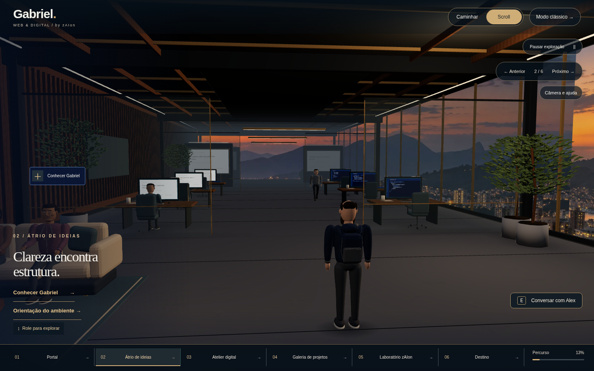
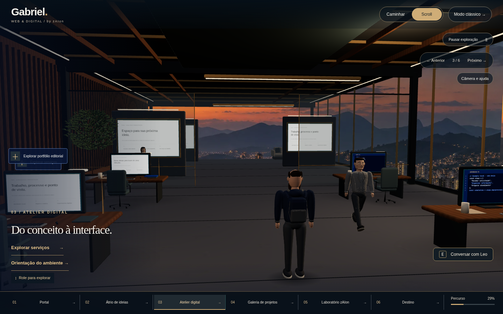
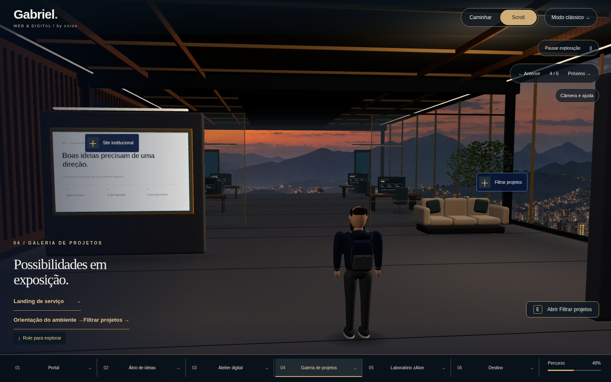
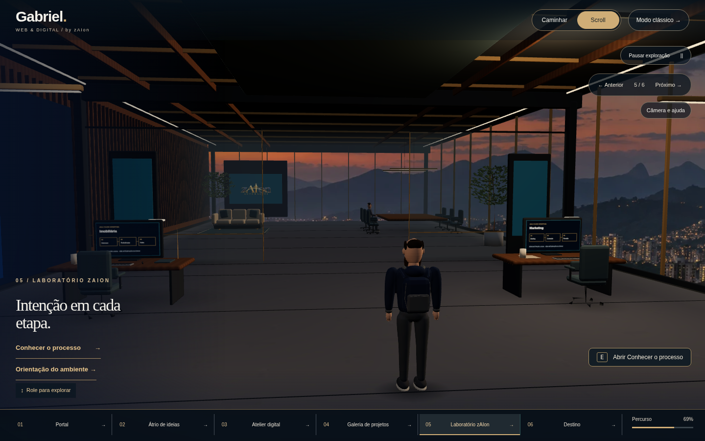
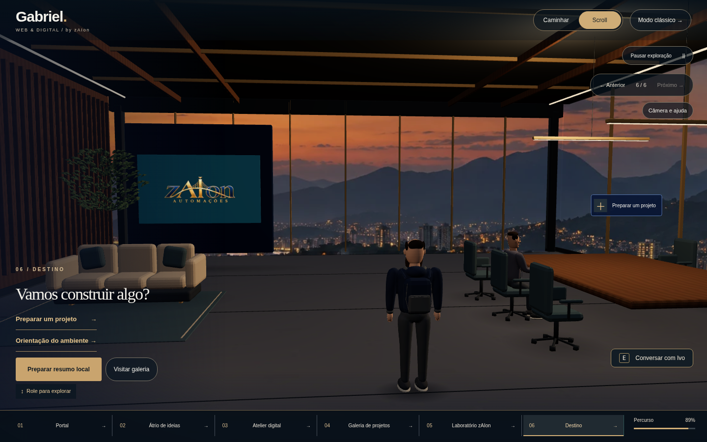
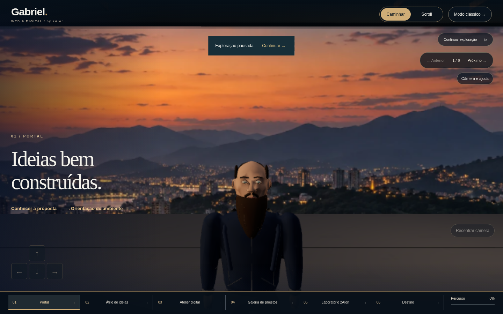
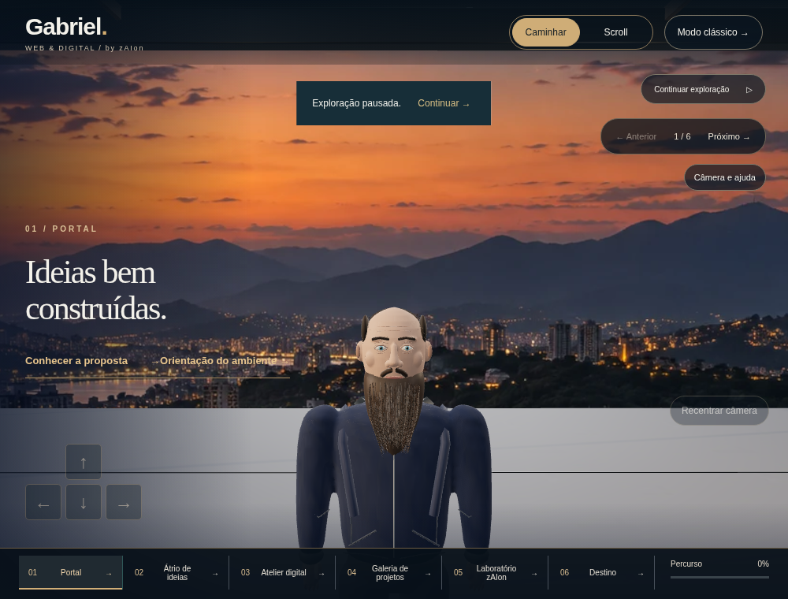
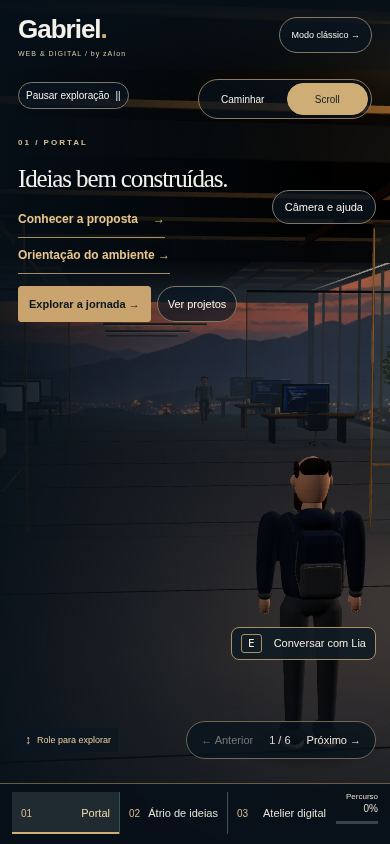
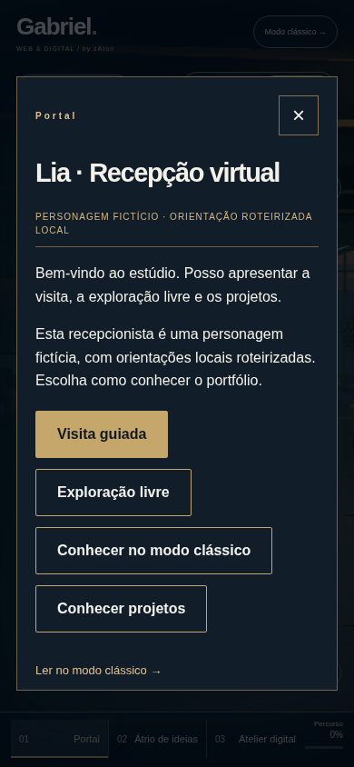
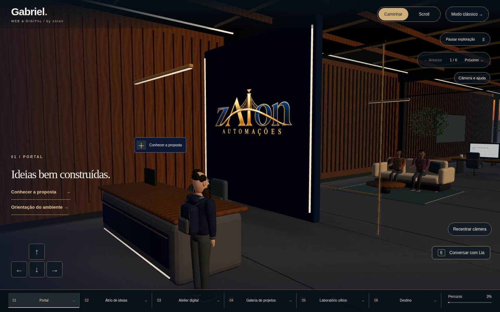

zAIon / VIRTUAL STUDIO · 28/10/2026
Escritório conectado.
Personagens com mais detalhe.
Capturas reais do aplicativo, feitas no Chromium. Os interiores são geometria 3D, sem moodboard no lugar do cenário. A foto pessoal não integra esta revisão.
Relatório e execução · Geometria e integridade · Medições por qualidade
Recepção: antes e depois
Arraste para comparar. À esquerda: versão anterior. À direita: nova arquitetura. Mesma resolução; pequenos movimentos dos NPCs podem diferir.
Seis ambientes
01 · Recepção
02 · Convivência
03 · Desenvolvimento
04 · Galeria
05 · Laboratório de IA
06 · Reunião
Gabriel e materiais
Modelo completo: 60.660 triângulos, materiais PBR autorais de pele, olhos, tecido e cabelo. O modelo segue estilizado; não equivale a escaneamento ou personagem fotorrealista. A câmera próxima permite conferir rosto, barba e roupa.
Geometria completa · caminho de renderização por software.
LOD leve · mesmos ossos, cores e ações.
Caminho PBR com identificação do renderizador oculta. Continua sendo SwiftShader; não representa uma GPU física.
Celular e equipe virtual

390 px · navegação e opções secundárias.
Conversa roteirizada local com personagem fictício.
Recepção habitada, sem personagem ou cliente real alegado.Desenvolvimento: npm ci e npm run dev. Exportação: npm run build:pages. No ZIP, execute node INICIAR-REVISAO.mjs para abrir a versão estática sem instalar dependências.
Teste de nuvem com SwiftShader: o modo clássico continua disponível. Rascunho de contato somente em memória, sem envio.